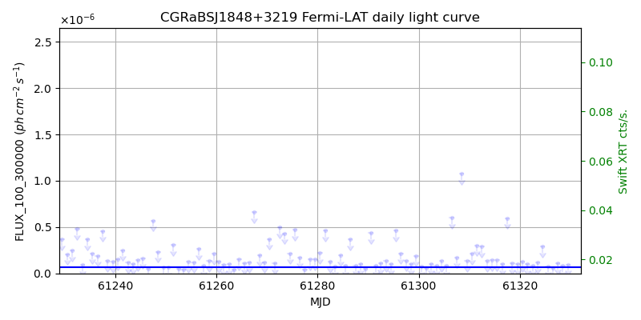
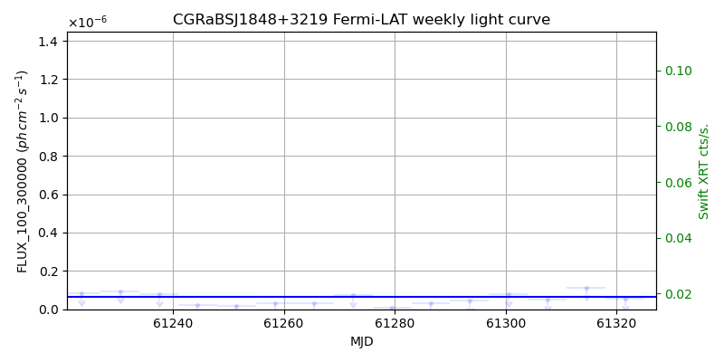
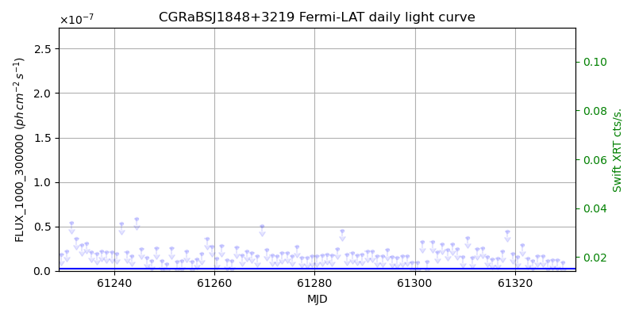
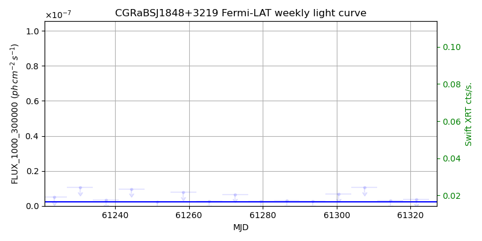

LAT Lightcurve site: https://fermi.gsfc.nasa.gov/ssc/data/access/lat/msl_lc/source/CGRaBS_J1848p3219
Swift site: https://www.swift.psu.edu/monitoring/source.php?source=CGRaBSJ1848+3219
NED: Query
Time of last update of this page: UT: 2026-10-24 15:24 (MJD: 61337.642)
| Property | Value |
|---|---|
| R.A. | 18:48:22.08 |
| Dec. | 32:19:01.2 |
| z | 0.798 |
| 3FGL SpectrumType | PowerLaw |
| 3FGL PL Index | 2.41 |
| 3FGL Flux_100_300000 | 6.29e-08 1 / (s cm2) |
| 3FGL Flux_1000_300000 | 2.44e-09 1 / (s cm2) |
| 3FGL Flux >200 GeV | 1.38e-12 1 / (s cm2) |
| 3FGL Extrap. Crab >200 GeV | 0.01 |
| 3FGL Flux After EBL Absorption >200GeV | 5.41e-14 1 / (s cm2) |
| 3FGL EBL Crab Fraction >200GeV | 0.00 |

| MJD | dMJD | Flux | dFlux | Frac3FGL | FracCrab>200GeV | EBLFracCrab>200GeV |
|---|---|---|---|---|---|---|
| 61332.50 | 0.50 | 1.42e-07 | 0.00e+00 | 0.00 | 0.00 | 0.00 |
| 61333.50 | 0.50 | 3.99e-07 | 0.00e+00 | 0.00 | 0.00 | 0.00 |
| 61334.50 | 0.50 | 7.46e-08 | 0.00e+00 | 0.00 | 0.00 | 0.00 |
| 61335.50 | 0.50 | 1.55e-07 | 0.00e+00 | 0.00 | 0.00 | 0.00 |
| 61336.50 | 0.50 | 6.76e-08 | 0.00e+00 | 0.00 | 0.00 | 0.00 |

| MJD | dMJD | Flux | dFlux | Frac3FGL | FracCrab>200GeV | EBLFracCrab>200GeV |
|---|---|---|---|---|---|---|
| 61300.50 | 3.50 | 7.87e-08 | 0.00e+00 | 0.00 | 0.00 | 0.00 |
| 61307.50 | 3.50 | 5.21e-08 | 0.00e+00 | 0.00 | 0.00 | 0.00 |
| 61314.50 | 3.50 | 1.13e-07 | 0.00e+00 | 0.00 | 0.00 | 0.00 |
| 61321.50 | 3.50 | 5.48e-08 | 0.00e+00 | 0.00 | 0.00 | 0.00 |
| 61328.50 | 3.50 | 2.28e-08 | 0.00e+00 | 0.00 | 0.00 | 0.00 |

| MJD | dMJD | Flux | dFlux | Frac3FGL | FracCrab>200GeV | EBLFracCrab>200GeV |
|---|---|---|---|---|---|---|
| 61332.50 | 0.50 | 1.88e-08 | 0.00e+00 | 0.00 | 0.00 | 0.00 |
| 61333.50 | 0.50 | 2.62e-08 | 0.00e+00 | 0.00 | 0.00 | 0.00 |
| 61334.50 | 0.50 | 1.67e-08 | 0.00e+00 | 0.00 | 0.00 | 0.00 |
| 61335.50 | 0.50 | 1.77e-08 | 0.00e+00 | 0.00 | 0.00 | 0.00 |
| 61336.50 | 0.50 | 2.23e-08 | 0.00e+00 | 0.00 | 0.00 | 0.00 |

| MJD | dMJD | Flux | dFlux | Frac3FGL | FracCrab>200GeV | EBLFracCrab>200GeV |
|---|---|---|---|---|---|---|
| 61300.50 | 3.50 | 6.76e-09 | 0.00e+00 | 0.00 | 0.00 | 0.00 |
| 61307.50 | 3.50 | 1.06e-08 | 0.00e+00 | 0.00 | 0.00 | 0.00 |
| 61314.50 | 3.50 | 3.03e-09 | 0.00e+00 | 0.00 | 0.00 | 0.00 |
| 61321.50 | 3.50 | 3.77e-09 | 0.00e+00 | 0.00 | 0.00 | 0.00 |
| 61328.50 | 3.50 | 2.95e-09 | 0.00e+00 | 0.00 | 0.00 | 0.00 |
--------------------------------------------------------- Using user-supplied coords: 18:48:22.08 32:19:01.2 2000 --------------------------------------------------------- FLWO UT night of: 2026-10-25 Local Sid. @ Midnight: 01:50 Sunset (-15.0) (local, UT): 18:49 01:49 Sunrise (-15.0) (local, UT): 05:27 12:27 Moonrise (local, UT): Moonset (local, UT): Moon phase: 0.99 --------------------------------------------------------- AzTime LSID UT Obj_el Obj_az Mn_el Mn_az Sep. --------------------------------------------------------- 18:49 20:39 01:49 66.8 279.0 26.2 94.5 87.0 19:19 21:09 02:19 60.5 280.8 32.4 98.6 87.2 19:49 21:39 02:49 54.2 282.7 38.6 103.2 87.2 20:19 22:09 03:19 48.0 284.8 44.7 108.4 87.3 20:49 22:39 03:49 41.8 287.0 50.6 114.6 87.4 21:19 23:09 04:19 35.7 289.3 56.2 122.3 87.5 21:49 23:39 04:49 29.8 291.8 61.2 132.2 87.5 22:19 00:09 05:19 23.9 294.5 65.5 145.3 87.6 22:49 00:39 05:49 18.1 297.4 68.4 162.2 87.7 23:19 01:10 06:19 12.6 300.5 69.4 182.2 87.7 23:49 01:40 06:49 7.2 303.9 68.2 202.0 87.8 00:19 02:10 07:19 2.2 307.5 65.1 218.6 87.9 00:49 02:40 07:49 -1.9 311.5 60.8 231.3 87.9 01:19 03:10 08:19 -7.7 315.9 55.7 240.9 88.0 01:49 03:40 08:49 -12.0 320.7 50.1 248.5 88.1 02:19 04:10 09:19 -15.8 325.9 44.3 254.6 88.2 02:49 04:40 09:49 -19.1 331.6 38.2 259.8 88.3 03:19 05:10 10:19 -21.9 337.7 32.1 264.4 88.4 03:49 05:40 10:49 -24.0 344.2 26.0 268.5 88.5 04:19 06:10 11:19 -25.3 351.0 19.9 272.4 88.7 04:49 06:40 11:49 -25.9 358.0 13.8 276.2 88.8 05:19 07:11 12:19 -25.8 5.1 7.8 279.9 89.0 05:27 07:18 12:27 -25.6 6.9 6.2 280.9 89.0 --------------------------------------------------------- Moon up all night, no dark time. Dark hours >55 deg.: 0.00